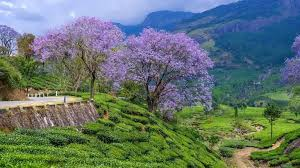
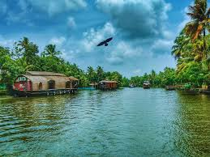
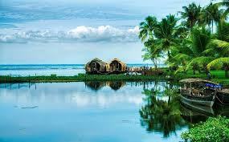
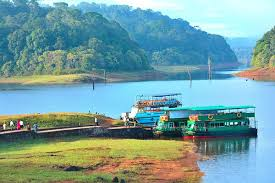

Munnar

A breathtaking hill station famous for its sprawling, emerald-green tea plantations, misty mountains, and the endemic Neelakurinji flower that blooms once every 12 years.
Alleppey

Known as the 'Venice of the East', it is famous for its vast network of backwaters, where tourists enjoy serene houseboat cruises through lagoons, canals, and paddy fields.
Kochi

A historic port city that showcases a blend of cultures—Portuguese, Dutch, and British. Highlights include the Chinese Fishing Nets, Fort Kochi, and the Mattancherry Palace.
Thekkady

Home to the Periyar National Park and Wildlife Sanctuary, it is famous for its dense evergreen forests and diverse wildlife, including elephants and tigers, with opportunities for bamboo rafting and spice plantation visits.
Wayanad

A green paradise known for its picturesque waterfalls (like Sochipara Falls), historical caves (Edakkal Cave), spice plantations, and trekking trails in the Western Ghats.